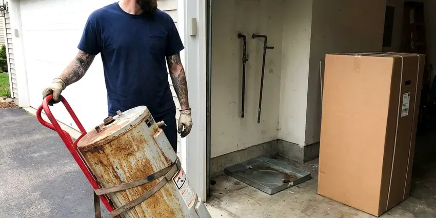

Tankless Water Heater Replacement in Spartanburg, SC
Get a new tankless from KBN Plumbing in Spartanburg, SC, installed with isolation valves for yearly flushing.
- Code Approved Venting
- Licensed Gas Line Technicians
- Gas Line Sizing Included
- Manufacturer Warranty Registration

Endless Hot Water Starts With One Call in Spartanburg, SC.
Call KBN Plumbing for a free estimate on your tankless swap.
New Tankless Water Heaters for Spartanburg, SC Households
KBN Plumbing replaces tankless water heaters for homes across Spartanburg, SC. A new unit is a real investment, so we size it to your peak flow and set it up with isolation valves for easy flushing. Installed right, it can last two decades.
Our expertise includes:
- Scale prevention with isolation valves and inline filter options
- Safe gas and electric connections for new units.
- Proper venting and condensate drain setup.

Additional Plumbing Replacement Services in Spartanburg, SC
When repairs are no longer enough, our replacement services in Spartanburg, SC deliver durable upgrades that restore full performance.


Water Heater Replacement in Spartanburg


Customers
Why Choose KBN Plumbing for Tankless Water Heater Replacement in Spartanburg, SC?
A tankless heater is only as good as its gas supply and venting. We measure both before we quote, so your new unit fires at full output instead of cutting out when two showers and the washer run together. Full fire, full flow.
- Lower Gas Bills, A tankless heats water only when a tap opens, which trims South Carolina utility bills compared with a tank.
- Right-Sized Units, We calculate gallons per minute and temperature rise for your fixtures instead of estimating from square footage.
- Space Saving, A wall-mounted unit frees up the floor space a tank used in the closet or garage.
Citywide Coverage
Exterior wall or utility closet, we cover tankless installs all over Spartanburg with the same scheduling and pricing on every single job. Most replacements are booked within a day or two. Sometimes it is sooner.
Experienced Team
Each technician at KBN Plumbing focuses on the details that make tankless work, like gas line sizing and vent termination clearances. Performance hinges on them. They decide safety as well.
Safety-First Approach
After every replacement we run gas leak detection and a combustion check to confirm the vent is drafting and the burner is clean. Installs meet South Carolina regulations. You get the readings in writing.
Trusted Certified Spartanburg Plumbing Services Professionals
At KBN Plumbing, we take pride in licensed, certified plumbing services throughout Spartanburg, SC. Credentials matter in this trade. Every repair, install and maintenance visit follows strict safety and quality rules, and the plumbers doing the work carry recognized industry credentials.
Call Us Now PHCC Plumbing Contractor Recognition
PHCC Plumbing Contractor Recognition Better Business Bureau (BBB) Accreditation
Better Business Bureau (BBB) Accreditation Angi Certified Pro
Angi Certified Pro ISO 9001 Quality Management Certification
ISO 9001 Quality Management CertificationTankless Units We Replace in Spartanburg, SC
Leaking Tankless Replacement in Spartanburg
A leaking tankless can drip inside the cabinet for weeks before anyone notices the puddle. Close the cold isolation valve and the gas cock first. Then we look at whether the leak is a fitting or the heat exchanger itself, because one is a $20 fix and the other means a new unit.

Rinnai Condensing Upgrades in Spartanburg, SC
Rinnai Sensei condensing models replace older non-condensing Rinnai units in a lot of homes, but the venting changes from stainless to PVC. We handle that conversion. Gas and water connections usually line up.
Emergency Tankless Replacement in Spartanburg, SC
A tankless that will not ignite or leaks from the heat exchanger leaves you with no hot water at all. Call (864) 588-3813 any time it quits. Common models are on the truck. If your exact unit is back-ordered, a temporary repair can sometimes hold until it ships.
Commercial Tankless Racks in Spartanburg, SC
Restaurants and salons run tankless racks hard. A rack of four units can draw more than 600,000 BTU, so we confirm gas pressure at the far unit with every burner firing. We work after hours when needed.
Tankless vs. Tank Replacement Cost in Spartanburg, SC
Tankless costs more up front than a tank, often twice as much installed. Across 20 years the gap narrows, because one tankless may outlast two tanks, but your usage decides the payback. We price both.
Tank to Tankless Conversions in Spartanburg, SC
Pulling a 50 gallon tank out of a garage frees up floor space and ends standby heat loss. Gas is the catch, since tankless units usually need 3/4-inch pipe or larger and a new vent. We check the meter size and pipe run before quoting, and we cap or reroute the old flue and seal the roof penetration if it is no longer needed. Expect a full day.
Emergency Tankless Water Heater Replacement in Spartanburg
No hot water from a tankless usually shows up as an error code on the controller, and the code tells us half of what we need to know. Send us a photo of the display. If the heat exchanger is leaking, replacement is the fix, and we can often have a new unit running the same or next day.

Tank to Tankless Conversion in Spartanburg, SC
Converting from a tank to tankless takes a full day in most homes. The work usually includes a larger gas line, new venting through a wall or roof, and a new spot on the wall for the unit. We cap or remove the old flue.
Tankless Water Heater Replacement Near Me in Spartanburg, SC
Upgrading to endless hot water should not drag on for weeks. We give you a written estimate, explain the gas and vent changes in plain language, and schedule the install within a few days in most cases. No surprise charges later.
A local plumber who installs tankless units every week knows which models fit your existing vent and gas line without a pile of changes. That saves money. You get the price first.
KBN Plumbing at a Glance
- Licensed and insured plumbers serving Spartanburg, SC
- Same-day appointments and 24/7 emergency response
- Upfront, flat-rate pricing before work begins
- 4.8-star rated by 596+ South Carolina customers
Spartanburg Map
Spartanburg Information
- Population
- 39,040
- Area codes
- 864/828/704
- Service area
- Spartanburg and communities within 40 miles
- Nearby
- Greer, Greenville, Rock Hill, Fort Mill
Replacing a worn tankless in Spartanburg, SC pays off fastest when the new unit gets flush valves and a gas line that can feed it at full fire.
Talk to a Plumber
Reach out to KBN Plumbing for reliable plumbing work done by licensed pros in Spartanburg, SC.
Our Specialized Plumbing Services in Spartanburg, SC
At KBN Plumbing, we handle the full list of plumbing services across Spartanburg, SC. From leak detection to full system installs, our team works fast and charges fair prices on homes and commercial properties alike. Take a look at our core services below:


How a Tankless Replacement Works in Spartanburg, SC
We follow the same routine on every tankless replacement in Spartanburg, from sizing to the final test.
Call Us
Call (864) 588-3813 with your current model number and a photo of the install. We give you a ballpark price and schedule a visit.
Size and Inspect
Our tech measures gas line size, meter capacity, venting path and water hardness. Then we recommend a unit that fits your demand.
Install and Test
We remove the old heater, install the new one with service valves and venting, then test gas pressure and combustion. You get a walkthrough on settings and flushing.
Frequently Asked Questions About Tankless Water Heater Replacement in Spartanburg
Most tankless replacements in Spartanburg, SC cost $3,000 to $6,000 installed. Capacity and brand matter, but the big swing is whether it is a direct swap or a tank conversion. You get a written quote.
We do not recommend it. You are dealing with gas sizing, vent clearances and condensate, and errors there risk CO or a voided warranty. Most brands require a licensed installer.
We install Navien, Rinnai, Noritz, Takagi and Rheem. Flow, venting and budget decide which one.
Flush it once a year. Close the isolation valves, hook up a small pump and run descaler or white vinegar through the heat exchanger for about an hour, then clean the inlet filter screen. We can do it for you.
Repeated error codes, fluctuating temperature or water inside the cabinet. Once the heat exchanger leaks, replacing the unit usually makes more sense.
Navien, Rinnai, Noritz, Rheem and Bosch are all on our list. Each brand has its own install specs, and our techs follow them so the warranty holds. Your flow needs decide the pick.
A direct swap usually takes four to six hours. A tank conversion with new gas and venting takes a full day.
Often, yes, especially on a conversion. Many tankless units need 3/4-inch gas pipe and a meter that can supply 199,000 BTU on top of your furnace, range and dryer.
Hear From Customers Who Hired Our Plumbing Experts

Marcus H.
Grease from the fryer line kept clogging the kitchen drain at my diner. KBN Plumbing hydro jetted the line after closing, showed me the buildup on camera, and set us up on a quarterly cleaning so it does not catch us on a Friday again.
Drain Cleaning · Columbia, SC
Nathan E.
Our tankless heater kept throwing an error code and shutting off mid shower. The tech flushed the heat exchanger, which was full of scale, and replaced a bad flow sensor. Hot water has been steady for half a year now.
Water Heater Repair · Spartanburg, SC
Laura S.
Our 40 gallon tank started leaking from the bottom after thirteen years. The tech hauled the old one out, set a new unit with a fresh expansion tank, and had hot water running in about four hours. He took the old tank with him too.
Water Heater Replacement · Rock Hill, SC
Greg S.
I manage a small strip center with six tenants. KBN Plumbing handles our annual backflow testing and fixed a recurring clog in the shared sewer line that had been backing into the nail salon. Their reports come in clean and on time.
Commercial Plumbing · Greer, SCSofia M.
Two new toilets went in during one visit. The tech set them on new wax rings and swapped the old supply lines. He also noticed our bathroom faucet dripping and replaced the cartridge while he was there. No mess left behind.
Toilet Installation · Columbia, SCKevin O.
Before buying our house I paid for a sewer camera inspection. KBN Plumbing found a belly in the line that held standing water about forty feet from the cleanout. We used the video to get the sellers to fix it before closing.
Sewer Camera Inspection · Rock Hill, SC